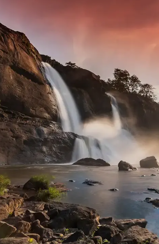
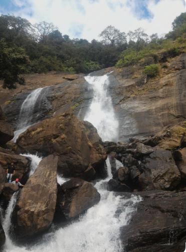
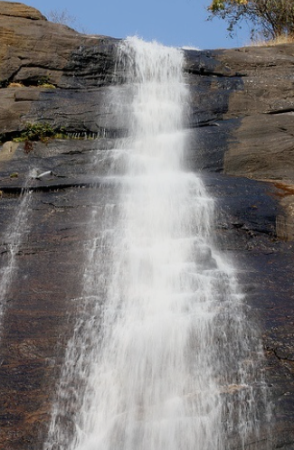

Keezharkuthu Waterfalls, also known as Rainbow Waterfalls, is a beautiful natural waterfall located in Idukki district, Kerala. The water falls from a height of about 200 feet through rocky cliffs, creating a spectacular view surrounded by dense forests and greenery. The waterfall flows throughout the year, making it a popular destination for tourists and nature lovers.
The area around the waterfall is ideal for trekking, photography, picnics, and bird watching. During the monsoon season, the waterfall becomes more powerful and attracts many visitors. The peaceful atmosphere, cool climate, and scenic surroundings make Keezharkuthu Waterfalls a perfect destination for those who wish to enjoy the natural beauty of the Western Ghats.



Keezharkuthu Waterfalls, also known as the Rainbow Waterfalls, is one of the most beautiful waterfalls in Idukki District, Kerala. It is located near Udumbannoor, about 25 km from Thodupuzha. The waterfall cascades down rocky cliffs surrounded by dense forests and medicinal plants, making it a popular destination for nature lovers and adventure enthusiasts. 1
Keezharkuthu Waterfalls has long been known for its natural beauty and medicinal forest surroundings. As tourism developed in Idukki, it became one of Kerala's important eco-tourism destinations, attracting visitors for trekking, camping and rock climbing. 2
The waterfall is famous for its rainbow-like appearance created by sunlight reflecting through the mist. Visitors can enjoy trekking, rock climbing, camping, photography and the peaceful natural surroundings of the Western Ghats. 3
The surrounding forests are rich in evergreen trees, bamboo, medicinal herbs and many rare plant species. Tribal communities have traditionally used many of these plants for medicinal purposes. 4
Today, Keezharkuthu Waterfalls is one of the leading eco-tourism destinations in Idukki. It is famous for its rainbow effect, trekking, rock climbing, camping and beautiful forest landscapes, attracting thousands of visitors every year. 5